Configuring the properties of the file DictionaryForMIDs.properties
DictionaryForMIDs is customized via a set of properties in a file called
DictionaryForMIDs.properties. Each of the properties must be provided
unless otherwise noted.
The PropertiesEditor of DictionaryForMIMs-Creator is a GUI that makes
it easier to create a DictionaryForMIDs.properties file. There, you will
use CheckBoxes, Comboboxes, Lists, Sliders and so on, to create the properties
file. When done, PropertiesEditor will save your options in a
DictionaryForMIDs.properties file.
To launch the PropertiesEditor, go to the DictionaryGeneration tab and hit
the Create button.

List of properties:
infoText
- infoText
Text that is shown on top of the info-dialog. Please provide in this TextArea,
information about the dictionary, like contact information for someone who can be
contacted concerning the dictionary. That may be you (the person who set up this
dictionary into DictionaryForMIDs) and/or the maintainer of the dictionary itself.
So, include an email-address and/or homepage. Also provide a copyright notice for the dictionary.
numberOfAvailableLanguages
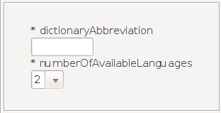
- dictionaryAbbreviation
- numberOfAvailableLanguages
dictionaryAbbreviation is a short abbreviation for identifying the
origin of the dictionary. This is an abbreviation for the name of the
organization or project where the dictionary comes from, e.g. freedict
for the dictionaries from freedict.org. Preferably only a few characters
long. The JarCreator tab uses this property to form the application name.
numberOfAvailableLanguages defines how many languages are in the dictionary. For many
dictionaries this will be 2. Here the ComboBox gives you 2 choices: 2 or 3 languages.
For each language the languageX-properties need to be defined as described below
(X is a number starting from 1 to numberOfAvailableLanguages).
As an example, we selected "2" in the ComboBox, so all the properties we will be
using are defined only for language1 and language2. Selecting "3" would also
define these properties for language3.
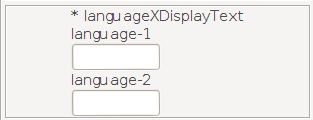
- languageXDisplayText
Text that is used on the user interface to identify the language. X
needs to be replaced with the number of the column for the language. For
example:
language1DisplayText: English
language2DisplayText: Portuguese
dictionaryGenerationOmitParFromIndex

- languageXFilePostfix
- dictionaryGenerationOmitParFromIndex
languageXFilePostfix is the text that is used in file names to identify the
searchfile and the index files for a language. This is typically a 3-letter text,
such as Eng for English; as defined in the ISO 3-letter codes available
here.
As shown in the screen shot, the ComboBox comes with some default values.
If your choice is not included in the default values, then select CHOOSE MY OWN
in order to manually enter a value.
dictionaryGenerationOmitParFromIndex:
DictionaryGeneration excludes text within curly brackets from indexing (i.e.
the text within {{ and }} is not included in the index files, see
here for more information). This
behaviour can be switched off by setting
dictionaryGenerationOmitParFromIndex to false. When
dictionaryGenerationOmitParFromIndex is set to false, then also the text
within {{ and }} will be included in the index.
The property dictionaryGenerationOmitParFromIndex is optional. The
default value is true. To switch true/false use the CheckBox, that is
switch select/deselect.
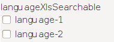
- languageXIsSearchable
This is a boolean property with either the value true or false, that is selected or deselected. Select the CheckBox when it is allowed to search for translations for that language. Normally this property is selected for bi-directional translation dictionaries. For lookup dictionaries, e.g. for an acronym dictionary, where it is only possible to search from the acronym to the explanation, this property is set to false (deselected) for the explanation language/column. For an example see the elements dictionary from the download section.
Also for an unidirectional dictionary, which for example only translates
from English to Portuguese (but not Portuguese to English), you have to set
languageXIsSearchable to false (deselect the CheckBox) for Portuguese.
This property is optional, the default value is true.
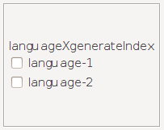
- languageXGenerateIndex
This is a boolean property with either the value true or false,
that is selected or deselected. This tells DictionayGeneration whether
to generate an index for this language.
This property is optional, the default value is true (selected).
Normally this property has the same value as languageXIsSearchable.
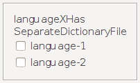
- languageXHasSeparateDictionaryFile
This is a boolean property with either the value true or false,
that is selected or deselected. Select this CheckBox when there is
a separate dictionaryXXX.csv file for this language (for an explanation
about the files, see section
Files generated by the DictionaryGeneration tool). Normally all
languages use the same dictionaryXXX.csv files, namely for those
dictionaries where expression ABC translates to XYZ and this means that
XYZ translates back to ABC. For dictionaries where ABC translates to
XYZ, however XYZ translates to DEF, this property is set to true that
is, the CheckBox is deselected. For an example, see the German-French
freedict dictionary from the download section.
For documentation, see here.
This property is optional, the default value is false (deselected).
indexFileSeparationCharacter,
searchListFileSeparationCharacter and
dictionaryFileSeparationCharacter
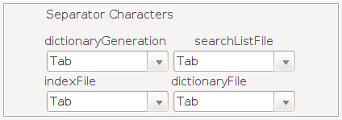
- dictionaryGenerationSeparatorCharacter
- indexFileSeparationCharacter
- searchListFileSeparationCharacter
- dictionaryFileSeparationCharacter
dictionaryGenerationSeparatorCharacter is the separation character
for the input dictionary file that is read by DictionayGeneration.
indexFileSeparationCharacter, searchListFileSeparationCharacter,
dictionaryFileSeparationCharacter are the separation character for
the output csv files that are generated by DictionayGeneration.
The separaton character for the above mentioned properties needs
to be put in apostrophes when manually writing/editing
the DictionaryForMIDs.properties file. Can be ',' or ';'. Can also be '\t'
(backslash plus t) for a tab-character.
This property is optional, the default value is \t (tab-character).
Here, in the PropertiesEditor, some default values are provided in ComboBoxes.
Just choose between these values.

- dictionaryGenerationLanguageXExpressionSplitString
This is used by DictionaryGeneration as follows: when for a language
an expression actually contains several sub-expressions, this property
is set to the string that separates these sub-expressions.
Example: the expression "to choose, to select, to pick" contains
three sub-expressions: (1) "to choose", (2) "to select" and (3) "to
pick". By setting dictionaryGenerationLanguageXExpressionSplitString to
, for this language, DictionaryGeneration will extract these 3
expressions. This is done by writing the SplitString for a language, in the
TextField that correspond to that language in the PropertiesEditor.
This property is optional, the default value is blank (nothing is entered in the TextField).

- dictionaryGenerationInputCharEncoding
Character set encoding for the input dictionary file that is read by DictionaryGeneration.
Supported character set encodings are provided in the ComboBox.
As you can see them on the screen shot, they are:
UTF-8
ISO-8859-1
US-ASCII
The default value is ISO-8859-1 but the first on the list is UTF-8. It works fine also.
searchListCharEncoding and
dictionaryCharEncoding
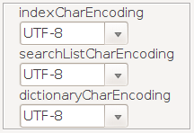
- indexCharEncoding
- searchListCharEncoding
- dictionaryCharEncoding
These 3 properties define the character set encoding that is used for the output searchlist file/index files/dictionary files.
Supported character set encodings are:
UTF-8
ISO-8859-1
US-ASCII
Note: on very old mobile/PDA devices UTF-8 may not be supported. normally recent models do support it.
languageXDictionaryUpdateClassName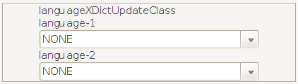
- languageXDictionaryUpdateClassName
This property defines for the DictionaryGeneration-tool a "DictionaryUpdate"-class that is used for a language. DictionaryUpdateClass changes the ways entries are stored when the tool converts an input dictionary file into the DictionaryforMIDs generated files. For details on the files created when a dictionary is generated, see Generating the files for DictionaryForMIDs.
For example: DictionaryUpdateEngDef removes unneeded words from the
indexes such as "the", "a", and "at".
These words are unneeded in the indexes and add unnecessary size
to the files. When a user performs a search, these words will
still be displayed in the definition, however.
All the available DictionaryUpdate classes' names are provided in
the ComboBoxes.
The property languageXDictionaryUpdateClassName is optional. Use this
property only if you really need it, otherwise set the selected choicec in
the ComboBoxes to NONE

This is the name of a Java class that is used to 'normate' words. Whereas DictionaryUpdateClass changes dictionary files only when the dictionary is generated, NormationClass affects the words that the user enters when searching.
For example: NormationGer parses the nonNormatedWord for the German 'Umlauts' (ä, ö, ü) and returns the word with the Umlaut-paraphrasing (ae, oe, ue). So the user can search for "Mädchen" or "Maedchen" and the translation will be found in both cases.
These changes in the dictionary files are done in 2 steps. First the DictionaryGeneration-tool calls the NormationClass to change the indexes to incorporate the phonetic changes (ä is changed to ae, for example). Then when the user performs a search, the NormationClass is called again to make the phonetic changes to match the changes that were made earlier with the DictionaryGeneration-tool.
Via Normation-classes it is possible to provide language-specific
search features and phonetic search. A lot of power lies in these
Normation classes !!
Normation classes are available for several languages. For a list of
available Normation classes see here.
If you intend to implement a new Normation class, see the documentation
of NormationClasshere.
All the available Normation classes' names are provided in the ComboBoxes
but the property languageXNormationClassName is optional
indexFileMaxSizeand
dictionaryFileMaxSize
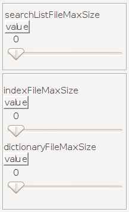
- searchListFileMaxSize
- indexFileMaxSize
- dictionaryFileMaxSize
Defines the size in bytes of the biggest searchlist file/index
file/dictionary file, as generated by DictionaryGeneration. These
properties are automatically determined and set by DictionaryGeneration,
normally there is no longer a need to set these properties manually.
However these properties need to be manually defined when a dictionary
is merged from two (or more) different source dictionaries and
DictionaryGeneration is run once for each of these source dictionary
(the values from the first run would be overwritten by the second run).
When these properties are already manually set when DictionaryGeneration
is run, then no automatic generation for these properties is done. For
the manual values you must ensure that no searchlist file/index
file/dictionary file is bigger than the property value, otherwise some
translations are not found. There is no problem if the value of these
properties is bigger than the actual maximum file size. For example if
you set the dictionaryFileMaxSize to 50000 even if the biggest
dictionary file is only 35000 bytes everything will work correctly.
However DictionaryForMIDs will allocate 50000 bytes of heap memory, and
keep in mind that specifically for older devices heap memory is scarce.
Use the Sliders to adjust the values for these properties. If you find it
hard to enter a specific value with the sliders, choose no matter the value
and go on to the property preview/edit window by hitting the Create the
Properties File button. Once in the properties preview/edit window,
before saving the values to the properties file, hit the Edit button
below in order to be able to edit the properties. Finally, dentify the *MaxSize
properties and manually modify the values provided by the sliders. Below is
a screen shot of the properties preview/edit window. Hit the Edit
button and then modify the values in blue.
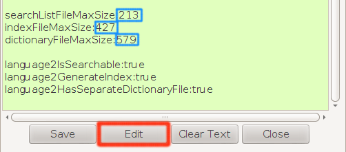
dictionaryGenerationMinNumberOfEntriesPerDictionaryFile

- dictionaryGenerationMinNumberOfEntriesPerDictionaryFile
- dictionaryGenerationMinNumberOfEntriesPerIndexFile
These define for DictionaryGeneration the number of entries (= lines) per
dictionary file and per index file.
These properties are optional, the default value for
dictionaryGenerationMinNumberOfEntriesPerDictionaryFile is 200 and the
one for dictionaryGenerationMinNumberOfEntriesPerIndexFile is 500.
As a general hint, you could try to set these values so that the size of
a single directory file and the size of a single index file do not
exceed 100 kB (size defined by properties searchListFileMaxSize,
indexFileMaxSize and dictionaryFileMaxSize).
If you are setting up a dictionary for very old devices with very
little heap memory, then set these values low enough so that the
biggest file does not exceed 10 kB for example.
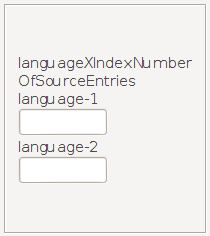
- languageXIndexNumberOfSourceEntries
This property is automatically generated by DictionaryGeneration. The
value contains the number of 'begin of expression'-index entries. This
value gives the number of words/expressions that the dictionary contains
for languageX. The values of languageXIndexNumberOfSourceEntries are
shown in the Info-Dialog (will be implemented in a future version).
Note that when you merge a dictionary from two (or more) source
dictionaries and DictionaryGeneration is run once for each of these
source dictionaries, then you need to manually copy the entries for
languageXIndexNumberOfSourceEntries into the final
DictionaryForMIDs.properties file.
- logLevel
The property logLevel is set in the file DictionaryForMIDs.jad (not DictionaryForMIDs.properties). It Allows to switch on/off debugging information. A logLevel of 0 turns debugging output off, a logLevel of 3 turns all debugging output on; the levels 1 and 2 turn some debugging output on.
- languageXContentNN properties
With the languageXContentNN properties you can specify the content of your dictionary. For example you can specify that there is a pronunciation part, an explanation part, etc.
DictionaryForMIDs-Creator's PropertiesEditor window has a languageXContentNN Properties
window called ContentProperties-Creator. It makes it possible to create contentNN
properties and passe them to the PropertiesEditor which will enable you to save
them along with the other properties. The PropertiesEditor window is already large enough,
incorporating the languageXContentNN properties in it would render it's resolution larger than 1366X768.
That is why it was decided to create a separate application and window called ContentProperties-Creator.
To launch this window hit the button on the screen shot below.
To see how to create languageXContentNN properties with the PropertiesEditor and the ContentProperties-Creator,
see the page dedicated to that here.

The languageXContentNN properties are optional.
Here is a sample DictionaryForMIDs.properties file:
infoText: IDP (English - German), version 1.1 19Feb99: http://www.ilovelanguages.com/IDP/IDPfiles.html dictionaryAbbreviation: IDP(Eng-Ger) numberOfAvailableLanguages: 2 language1DisplayText: English language2DisplayText: German language1FilePostfix: Eng language2FilePostfix: Ger language1IsSearchable: true language2IsSearchable: true language1GenerateIndex: true language2GenerateIndex: true language1HasSeparateDictionaryFile: false language2HasSeparateDictionaryFile: false dictionaryGenerationSeparatorCharacter: '\t' indexFileSeparationCharacter: '\t' searchListFileSeparationCharacter: '\t' dictionaryFileSeparationCharacter: '\t' dictionaryGenerationOmitParFromIndex: true dictionaryGenerationInputCharEncoding: UTF-8 indexCharEncoding: UTF-8 searchListCharEncoding: UTF-8 dictionaryCharEncoding: UTF-8 language1DictionaryUpdateClassName: de.kugihan.dictionaryformids.dictgen.dictionaryupdate.DictionaryUpdate language2DictionaryUpdateClassName: de.kugihan.dictionaryformids.dictgen.dictionaryupdate.DictionaryUpdate language1NormationClassName: de.kugihan.dictionaryformids.translation.normation.Normation.NormationEng language2NormationClassName: de.kugihan.dictionaryformids.translation.normation.Normation.NormationGer
If you have any problem with setting up a new dictionary, just contact us and we will try to help you out!